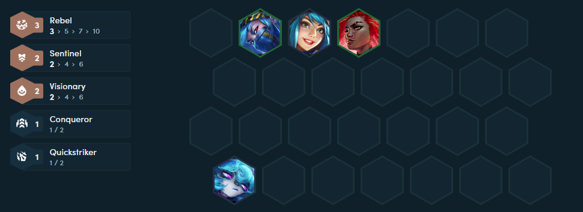
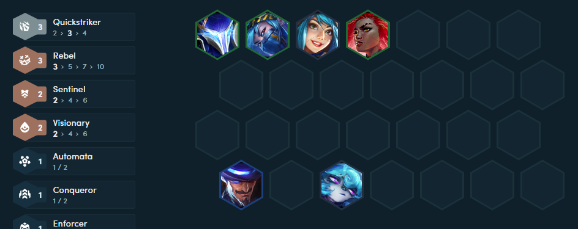
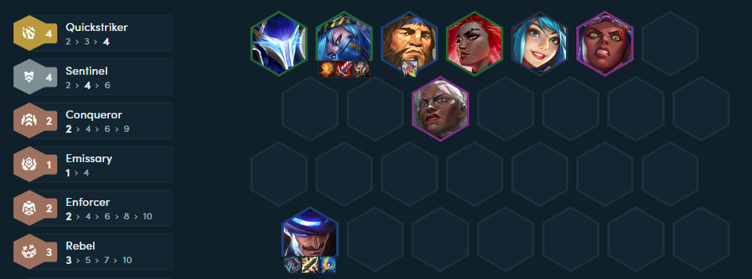

ĐTCL mùa 13: Leo hạng thần tốc cùng đội hình Cực Tốc - Vệ Binh sát thương cực "lỗi"
Đội hình Cực Tốc - Vệ Binh tỏ ra cực kỳ mạnh và đang "làm mưa làm gió" ở Siêu máy chủ LPL tại ĐTCL mùa 13.
Sự trở lại của hệ Cực Tốc tại ĐTCL mùa 13
Trong số các hệ đóng vai trò chủ lực của ĐTCL mùa 13 thì Cực Tốc thường không được game thủ chú ý quá nhiều. Lý do tới từ việc sát thương đầu ra của hệ này không thực sự ấn tượng, các chủ lực cận chiến thì không sở hữu khả năng sinh tồn tốt. Điều này dẫn tới tình trạng dù có xây dựng tốt nhưng các chủ lực của hệ Cực Tốc vẫn có thể bị hạ gục nhanh chóng mà chưa gây ra đủ lượng sát thương cần thiết.

Tuy nhiên, điểm yếu này đã được khắc phục phần nào khi lần lượt Ambessa và Akali được Riot Games buff mạnh để gia tăng sát thương đầu ra. Kết hợp với những hiệu ứng vô cùng khó chịu từ Twisted Fate thì hệ Cực Tốc đã được cải thiện đáng kể khả năng "gánh đội" ở phiên bản hiện tại. Thậm chí tại Siêu máy chủ LPL, đội hình Cực Tốc kết hợp với Vệ Binh còn đang "làm mưa làm gió" khi được các cao thủ xếp vào nhóm S (đội hình cực khỏe).
Xây dựng đội hình Cực Tốc - Vệ Binh tại ĐTCL mùa 13
Ở giai đoạn đầu trận, game thủ nên hướng tới mốc 3 Nổi Loạn với Akali, Vex và Irelia để có thể tìm kiếm chuỗi thắng. Tộc Nổi Loạn gần đây được buff hiệu ứng tăng máu nên game thủ có thể yên tâm rằng các tướng chủ lực và chống chịu sẽ sở hữu khả năng trụ giao tranh rất tốt. Ngoài ra, Rell cũng là sự bổ sung hợp lý ở đầu trận khi kích hoạt mốc 2 Vệ Binh và 2 Tiên Tri với Irelia và Vex để bổ sung sức mạnh cho đội hình.
Sau khi đạt được cấp độ 6, game thủ sẽ áp dụng lối chơi roll chậm nhằm tìm kiếm Akali và Nocturne nhiều nhất có thể. Việc nâng cấp một trong hai đơn vị này lên 3 sao sẽ giúp đội hình cải thiện đáng kể lượng sát thương đầu ra. Twisted Fate cũng là lựa chọn rất mạnh để đưa vào đội hình nhằm bổ sung lượng sát thương phép tầm xa. Hơn nữa, đơn vị này cũng có thể cầm các món đồ hỗ trợ như Dao Điện Statikk, Quỷ Thư Morello để giúp các chủ lực cận chiến gây sát thương hiệu quả hơn.
Việc sở hữu Akali hoặc Nocturne 3 sao sẽ giúp game thủ tích lũy được lượng kinh tế không nhỏ để hướng tới giai đoạn cuối trận. Khi đó, Ambessa và Illaoi sẽ là những sự bổ sung cần thiết nhằm hoàn thiện mốc 4 Vệ Binh và 4 Cực Tốc. Loris cũng là một sự bổ sung cực kỳ tốt khi đơn vị này kích hoạt mốc 2 Cảnh Binh với Twisted Fate và giúp đơn vị này mạnh lên đáng kể khi sở hữu đầy đủ trang bị.
Một số lưu ý khi xây dựng đội hình
Với việc hệ Cực Tốc có nhiều chủ lực cận chiến thì game thủ nên ưu tiên ghép 2 món đồ Huyết Kiếm và Quyền Năng Khổng Lồ càng sớm càng tốt. Các đơn vị như Akali, Nocturne hay Ambessa đều sử dụng tốt những món đồ này nên người chơi có thể linh hoạt trong việc lựa chọn chủ lực tùy theo tình thế trận đấu. Ngoài ra, game thủ cũng nên ghép Dây Chuyền Chuộc Tội cho các tướng chống chịu để gia tăng khả năng sống sót cho các chủ lực cận chiến bên cạnh. Về mặt Lõi Công Nghệ, các nâng cấp giúp gia tăng khả năng reroll sẽ được ưu tiên nhằm đẩy nhanh quá trình đưa Akali lên 3 sao.